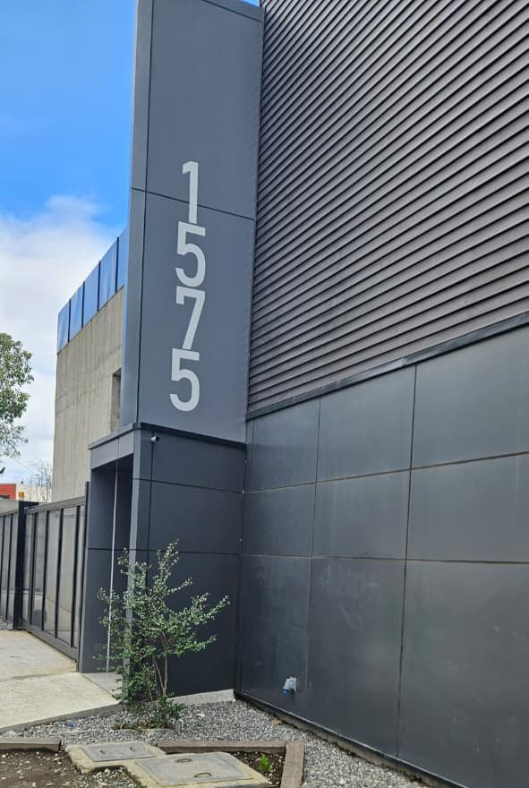
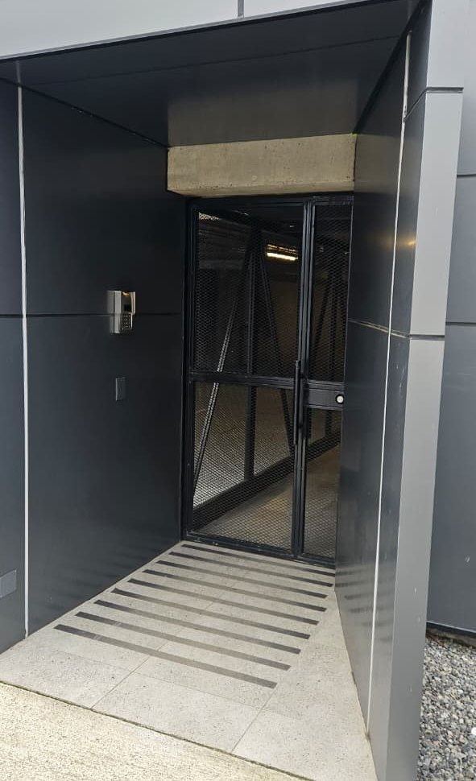
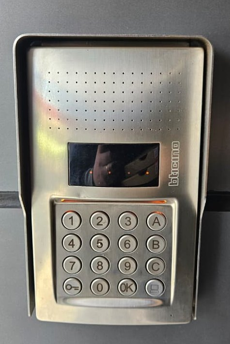

Depto 309 · Villarrica
Guía del huésped — cómo usar todo en el departamento.Guest guide — how to use everything in the apartment.Guide du voyageur — comment tout utiliser dans l’appartement.
Bienvenido
Welcome
Bienvenue
¡Bienvenido al Depto 309!Welcome to Apt 309!Bienvenue dans l’appartement 309 !
Esta guía te muestra cómo usar todo en el departamento, paso a paso y con fotos. Elige un tema en el menú de la izquierda.
This guide shows you how to use everything in the apartment, step by step and with photos. Pick a topic from the left menu.
Ce guide te montre comment tout utiliser dans l’appartement, étape par étape et avec des photos. Choisis un sujet dans le menu de gauche.
WiFi
La clave te la enviamos por el chat de Airbnb. Ver la pestaña WiFi.We send you the password via the Airbnb chat. See the WiFi tab.On t’envoie le mot de passe par le chat Airbnb. Voir l’onglet WiFi.
Guías de aparatosAppliance guidesGuides des appareils
WiFi
Conéctate al WiFiConnect to WiFiConnecte-toi au WiFi
Nombre de la red · Network
Network name
Nom du réseau · Network
Clave · Password
¿No la ves? Pídenosla por el chat de Airbnb.Can't find it? Ask us via the Airbnb chat.Tu ne la trouves pas ? Demande-la-nous par le chat Airbnb.
- Abre los ajustes de WiFi en tu teléfono.Open your phone's WiFi settings.Ouvre les réglages WiFi de ton téléphone.
- Toca la red Tommy-309.Tap the Tommy-309 network.Appuie sur le réseau Tommy-309.
- Escribe la clave y listo.Type the password and you're done.Écris le mot de passe et c’est bon.
Llegada
Check-in
Arrivée
Cómo entrarHow to get inComment entrer
Check-in desde las 15:00. El acceso es por conserjería (edificio con acceso controlado 24/7). No hay cerradura con código: el conserje te abre y te entrega las llaves.
Check-in from 3:00 PM. Access is through the concierge (building has 24/7 controlled access). There's no keypad lock: the concierge lets you in and hands you the keys.
Arrivée à partir de 15:00. On entre par la loge (immeuble avec accès contrôlé 24h/24). Il n’y a pas de serrure à code : le concierge t’ouvre et te donne les clés.
Dirección · Address
Address
Adresse · Address
Estacionamiento: piso 3 (mismo piso del depto), espacio #94.Parking: 3rd floor (same floor as the apartment), space #94.Parking : 3e étage (le même étage que l’appartement), place #94.
Así se ve el edificioThis is the buildingVoici l’immeuble

- El edificio está en Saturnino Epulef 1575, frente a la tienda Easy.The building is at Saturnino Epulef 1575, across from the Easy store.L’immeuble se trouve à Saturnino Epulef 1575, en face du magasin Easy.
- Entra por la calle lateral (Recabarren), primera entrada a la derecha.Enter through the side street (Recabarren), first entrance on the right.Entre par la rue latérale (Recabarren), première entrée à droite.
A pie: la puerta y el citófonoOn foot: the door and the intercomÀ pied : la porte et l’interphone


1- Aprieta el botón 1 de la foto: el de abajo a la derecha, con dibujo de pantalla.Press button 1 in the photo: the bottom-right one, with the screen drawing.Appuie sur le bouton 1 de la photo : celui d’en bas à droite, avec un dessin d’écran.
- Espera un poco. El conserje contesta y te abre la puerta.Wait a moment. The concierge answers and opens the door for you.Attends un peu. Le concierge répond et t’ouvre la porte.
- Dile que llegas al depto 309.Tell them you are arriving at apartment 309.Dis-lui que tu arrives à l’appartement 309.
- Regístrate en conserjería. El conserje te va a pasar una hoja para que anotes tus datos.Register at the concierge desk. They will hand you a form to write down your details.Inscris-toi à la loge. Le concierge va te donner une feuille pour noter tes informations.
- Pídele las llaves del depto 309. Dile que están en el casillero del 309, el de las cartas.Ask for the keys for apartment 309. Tell them the keys are in the 309 mailbox slot, the one for letters.Demande-lui les clés de l’appartement 309. Dis-lui qu’elles sont dans la case du 309, celle du courrier.
- Sube al piso 3.Go up to the 3rd floor.Monte au 3e étage.
- El depto 309 está en ese piso. Llegaste.Apartment 309 is on that floor. You made it.L’appartement 309 est à cet étage. Tu y es.
En auto: estacionamientoBy car: parkingEn voiture : le parking
El depto tiene estacionamiento propio: piso 3, espacio #94.The apartment has its own parking: 3rd floor, space #94.L’appartement a son propre parking : 3e étage, place #94.
- Tu espacio es el #94, en el piso 3.Your space is #94, on the 3rd floor.Ta place est la #94, au 3e étage.
- Ese es el mismo piso del depto: del auto al 309 no tienes que bajar.That is the same floor as the apartment: from the car to 309 you don't go down.C’est le même étage que l’appartement : de la voiture au 309, tu n’as pas à descendre.
- Te registras y pides las llaves al conserje igual que si llegaras a pie: están en el casillero del 309.You register and ask the concierge for the keys just like arriving on foot: they are in the 309 mailbox slot.Tu t’inscris et tu demandes les clés au concierge, comme si tu arrivais à pied : elles sont dans la case du 309.
Estos dos videos cortos muestran el camino.These two short videos show the way.Ces deux courtes vidéos montrent le chemin.
Video: youtube.com/shorts/JisGF6d4BHw
Video: youtube.com/shorts/-Ki-3DNJUpc
Salida
Check-out
Départ
Antes de irteBefore you leaveAvant de partir
Check-out hasta las 11:00.
Check-out by 11:00 AM.
Check-out jusqu’à 11:00.
- Apaga los aparatos eléctricos, sobre todo el calefactor de la entrada y el secatoallas del baño.Turn off the electric appliances, especially the heater at the entrance and the towel warmer in the bathroom.Éteins les appareils électriques, surtout le radiateur de l’entrée et le sèche-serviettes de la salle de bain.
- Apaga luces, cocina y horno. Cierra las ventanas.Turn off lights, stove and oven. Close the windows.Éteins les lumières, les plaques et le four. Ferme les fenêtres.
- Cierra la puerta con llave por fuera.Lock the door from the outside.Ferme la porte à clé de l’extérieur.
- Devuelve las llaves al conserje y menciona el número de depto (309).Return the keys to the concierge and mention the apartment number (309).Rends les clés au concierge et donne le numéro de l’appartement (309).
- Avísanos por el chat de Airbnb cuando hayas salido.Let us know via the Airbnb chat once you've left.Préviens-nous par le chat Airbnb quand tu seras parti.
Reglas de la casa
House rules
Règles de la maison
Reglas de la casaHouse rulesRègles de la maison
Para una buena convivencia con los vecinos:
For good coexistence with the neighbors:
Pour bien s’entendre avec les voisins :
- Máximo 4 huéspedes.Maximum 4 guests.Maximum 4 personnes.
- No fiestas, eventos ni reuniones.No parties, events or gatherings.Pas de fêtes, d’événements ni de réunions.
- No mascotas.No pets.Pas d’animaux.
- No fumar dentro. Solo en el balcón, usa el cenicero; no arrojes colillas.No smoking indoors. Balcony only, use the ashtray; don't throw butts.Ne fume pas à l’intérieur. Seulement sur le balcon, utilise le cendrier ; ne jette pas de mégots.
- Silencio 22:00–07:00. Evita ruidos molestos.Quiet hours 10:00 PM–7:00 AM. Avoid loud noise.Silence 22:00–07:00. Évite les bruits gênants.
- El balcón no tiene malla: no arrojes nada y vigila a los niños en todo momento.The balcony has no safety net: don't throw anything and watch children at all times.Le balcon n’a pas de filet : ne jette rien et surveille les enfants tout le temps.
- Cocina/horno eléctricos y termo: úsalos con cuidado, no cocines sin supervisión y toma duchas moderadas.Electric stove/oven and water heater: use carefully, don't cook unattended, keep showers moderate.Cuisinière/four électriques et chauffe-eau : utilise-les avec précaution, ne cuisine pas sans surveillance et prends des douches pas trop longues.
- Delivery de comida OK. No uses la dirección para recibir encomiendas o paquetes.Food delivery is OK. Do not use the address to receive parcels or packages.La livraison de repas est OK. N’utilise pas l’adresse pour recevoir des colis ou des paquets.
- Los consumibles de cortesía (café, té, aseo) son libres; el resto es inventario del depto.Courtesy consumables (coffee, tea, toiletries) are free; everything else is apartment inventory.Les consommables offerts (café, thé, produits de toilette) sont gratuits ; le reste fait partie de l’inventaire de l’appartement.
- Reporta cualquier daño por el chat de Airbnb.Report any damage via the Airbnb chat.Signale tout dégât par le chat Airbnb.
Cafetera
Coffee maker
Cafetière
Nespresso CitiZ
Café en cápsula, listo en menos de un minuto. Sin leche.
Capsule coffee, ready in under a minute. No milk.
Café en capsule, prêt en moins d’une minute. Sans lait.

Cómo preparar un caféHow to make a coffeeComment faire un café
- Revisa que el estanque de atrás tenga agua; si no, llénalo hasta MAX.Check the tank at the back has water; if not, fill it to MAX.Vérifie que le réservoir à l’arrière a de l’eau ; sinon, remplis-le jusqu’à MAX.
- Enciende con el botón Espresso o Lungo. La luz parpadea al calentar (~25 s) y queda fija cuando está lista.Turn it on with the Espresso or Lungo button. The light blinks while heating (~25 s) and stays steady when ready.Allume avec le bouton Espresso ou Lungo. La lumière clignote pendant qu’elle chauffe (~25 s) et reste fixe quand elle est prête.
- Sube la palanca, pon UNA cápsula Nespresso Original y baja la palanca hasta el tope.Lift the lever, drop in ONE Nespresso Original capsule, and push the lever all the way down.Lève le levier, mets UNE capsule Nespresso Original et baisse le levier à fond.
- Pon la taza vacía bajo la salida de café.Place the empty cup under the coffee spout.Mets la tasse vide sous la sortie du café.
- Pulsa Espresso (corto) o Lungo (largo).Press Espresso (short) or Lungo (long).Appuie sur Espresso (court) ou Lungo (long).
- El café sale y la máquina se detiene sola.The coffee pours and the machine stops on its own.Le café coule et la machine s’arrête toute seule.
- Sube y baja la palanca: la cápsula usada cae sola al depósito.Lift and lower the lever: the used capsule drops into the bin by itself.Lève et baisse le levier : la capsule usée tombe toute seule dans le bac.
Las partesThe partsLes éléments
Aprovecha la cafeteraMake the most of itProfite bien de la machine
CuidadosCarePrécautions
Radio
Radio Philco
Toca radio (FM/AM), Bluetooth desde tu teléfono, o un pendrive.
Plays radio (FM/AM), Bluetooth from your phone, or a USB stick.
Elle passe la radio (FM/AM), le Bluetooth depuis ton téléphone ou une clé USB.
- Gira la perilla de encendido hasta que haga clic.Turn the power knob until it clicks.Tourne le bouton d’allumage jusqu’au clic.
- Con el selector, elige: Radio, Bluetooth o pendrive.With the selector, pick: Radio, Bluetooth, or USB.Avec le sélecteur, choisis : Radio, Bluetooth ou clé USB.
- Radio: gira la perilla de sintonía hasta oír claro. Bluetooth: conéctate a "Philco"/"VT329" en tu teléfono.Radio: turn the tuning knob until it's clear. Bluetooth: connect to "Philco"/"VT329" on your phone.Radio : tourne le bouton de réglage des stations jusqu’à ce que le son soit clair. Bluetooth : connecte-toi à « Philco »/« VT329 » sur ton téléphone.
- Ajusta el volumen con la perilla.Adjust the volume with the knob.Règle le volume avec le bouton.
Calefactor
Heater
Radiateur
CalefactorHeaterRadiateur
Tiene un interruptor rojo al costado y botones en el panel de arriba.
It has a red switch on the side and buttons on the top panel.
Il a un interrupteur rouge sur le côté et des boutons sur le panneau du dessus.
Mira cómo se usaWatch how it worksRegarde comment ça marche
Video: youtube.com/shorts/btBiEkgnfc0

- Pon el interruptor rojo del costado en I.Set the red side switch to I.Sur le côté, mets l’interrupteur rouge en position I.
- En el panel de arriba, aprieta ⏻ para prender el calor.On the top panel, press ⏻ to turn on the heat.Sur le panneau du dessus, appuie sur ⏻ pour allumer le chauffage.
- Sube con › y baja con ‹. La pantalla muestra el número.Raise with › and lower with ‹. The screen shows the number.Monte avec › et baisse avec ‹. L’écran affiche le chiffre.
- Para apagar, aprieta ⏻. Si te vas, deja el interruptor rojo en O.To turn off, press ⏻. If you leave, set the red switch to O.Pour éteindre, appuie sur ⏻. Si tu pars, laisse l’interrupteur rouge sur O.
Secatoallas
Towel warmer
Sèche-serviettes
SecatoallasTowel warmerSèche-serviettes
Entibia y seca tus toallas. Tres botones debajo de la pantalla.
Warms and dries your towels. Three buttons below the screen.
Il chauffe et sèche tes serviettes. Trois boutons sous l’écran.
Mira cómo se usaWatch how it worksRegarde comment ça marche
Video: youtube.com/shorts/nkY58Gik89U
 123
123
- Aprieta el botón 3 ≡ para prenderlo.Press button 3 ≡ to turn it on.Appuie sur le bouton 3 ≡ pour l’allumer.
- Sube el calor con 2 +, bájalo con 1 −.Raise the heat with 2 +, lower it with 1 −.Monte la chaleur avec 2 +, baisse-la avec 1 −.
- Cuelga la toalla. En 20–40 min queda tibia.Hang your towel. In 20–40 min it's warm.Accroche ta serviette. En 20–40 min elle est tiède.
- Para apagar, aprieta ≡ otra vez.To turn off, press ≡ again.Pour éteindre, appuie encore sur ≡.
Lavadora
Washer
Lave-linge
Lavadora-Secadora LGLG Washer-DryerLave-linge séchant LG
Lava y también seca. Es inteligente (AIDD): pesa y detecta la tela sola y ajusta el lavado. Casi todo lo hace ella.
Washes and also dries. It's smart (AIDD): it weighs and senses the fabric on its own and adjusts the wash. It does almost everything for you.
Il lave et il sèche aussi. Il est intelligent (AIDD) : il pèse le linge, reconnaît le tissu tout seul et règle le lavage. Il fait presque tout.
Cómo lavarHow to washComment laver
- Aprieta Encendido.Press Power.Appuie sur Marche.
- Abre la puerta y mete la ropa. Deja un palmo libre arriba.Open the door and load the clothes. Leave a hand's width free at the top.Ouvre la porte et mets le linge. Laisse un espace d’une main en haut.
- Pon una tapita de detergente (o una cápsula) en el cajón de arriba a la izquierda.Put one cap of detergent (or one pod) in the drawer at the top left.Mets un bouchon de lessive (ou une capsule) dans le tiroir en haut à gauche.
- Cierra la puerta.Close the door.Ferme la porte.
- Gira el dial a Algodón.Turn the dial to Cotton.Tourne la molette sur Coton.
- Aprieta Inicio.Press Start.Appuie sur Départ.
- Espera a que suene. La puerta se destraba sola.Wait for the beep. The door unlocks by itself.Attends le bip. La porte se déverrouille toute seule.
- Para secar: saca la mitad de la ropa, gira el dial a Lavado y secado y aprieta Inicio.To dry: take out half the load, turn the dial to Wash & dry and press Start.Pour sécher : enlève la moitié du linge, tourne la molette sur Lavage et séchage et appuie sur Départ.
Los botonesThe buttonsLes boutons
La Temperatura y el Centrifugado los elige el programa solo — no hace falta tocarlos.The program sets Temperature and Spin for you — no need to touch them.Le programme choisit tout seul la Température et l’Essorage — pas besoin d’y toucher.
Programas — gira el dialPrograms — turn the dialProgrammes — tourne la molette
Aprovecha la lavadoraMake the most of itBien utiliser le lave-linge
CuidadosCarePrécautions
Seguridad · Extintor
Safety · Extinguisher
Sécurité · Extincteur
ExtintorFire extinguisherExtincteur
Está en el pasillo. Solo para fuego pequeño.
It's in the hallway. Only for a small fire.
Il est dans le couloir. Seulement pour un petit feu.
 1234
1234
- Tira el anillo 1 hacia afuera.Pull the pin 1 out.Tire la goupille 1 vers l’extérieur.
- Apunta la manguera 3 a la base del fuego (no a las llamas).Aim the hose 3 at the base of the fire (not the flames).Dirige le tuyau 3 vers la base du feu (pas vers les flammes).
- Aprieta la palanca 2 y mueve de lado a lado.Squeeze the lever 2 and sweep side to side.Appuie sur le levier 2 et balaie de gauche à droite.
Seguridad · Manta
Safety · Blanket
Sécurité · Couverture
Manta ignífugaFire blanketCouverture anti-feu
Junto al extintor. Ideal para fuego de cocina (sartén, aceite).
Next to the extinguisher. Best for kitchen fires (pan, oil).
À côté de l’extincteur. Parfaite pour un feu de cuisine (poêle, huile).
 12
12
- Tira las dos cintas 1 2 hacia abajo. La manta sale.Pull the two tapes 1 2 down. The blanket comes out.Tire les deux sangles 1 2 vers le bas. La couverture sort.
- Tapa el fuego con la manta y apaga la cocina.Cover the fire with the blanket and switch off the stove.Couvre le feu avec la couverture et éteins la cuisinière.
- Déjala encima hasta que se enfríe.Leave it on until it cools down.Laisse-la dessus jusqu’à ce que ça refroidisse.
Emergencias
Emergency
Urgences
Números de emergenciaEmergency numbersNuméros d’urgence
Anfitrión · Host
Host
Hôte
El edificio tiene conserjería 24/7 en la entrada.The building has a 24/7 concierge at the entrance.L’immeuble a un concierge 24h/24, 7j/7 à l’entrée.
¿Dónde está la seguridad?Where is the safety gear?Où est le matériel de sécurité ?